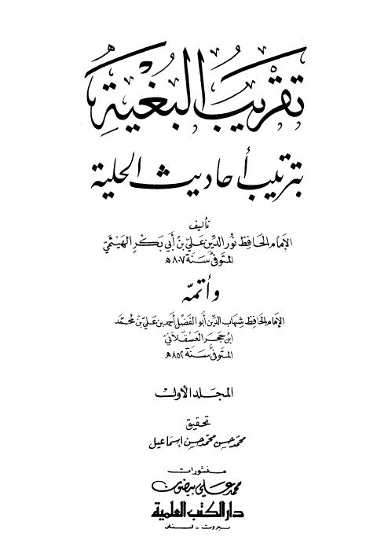
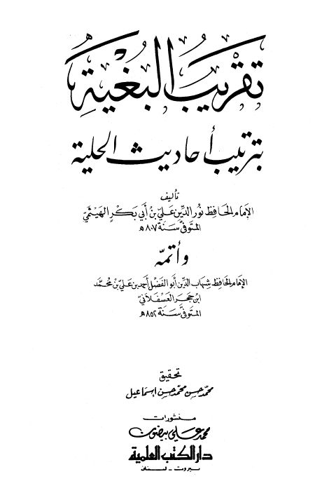

نور الدين علي بن أبي بكر الهيثمي
Author
Resources

ترتيب البغية بترتيب أحاديث الحلية للهيثمي وأتمه العسقلاني ترتيب البغية بترتيب أحاديث الحلية للهيثمي وأتمه العسقلاني علي بن أبي بكر الهيثمي • أحمد بن علي بن حجر العسقلاني تاريخ الثقات للعجلي
تاريخ الثقات للعجلي
نور الدين علي بن أبي بكر الهيثمي • أحمد بن علي بن حجر العسقلاني
تاريخ الثقات للعجلي
تاريخ الثقات للعجلي
نور الدين علي بن أبي بكر الهيثمي • أحمد بن علي بن حجر العسقلاني

تقريب البغية بترتيب أحاديث الحلية تقريب البغية بترتيب أحاديث الحلية علي بن أبي بكر الهيثمي • أحمد بن علي بن حجر العسقلاني